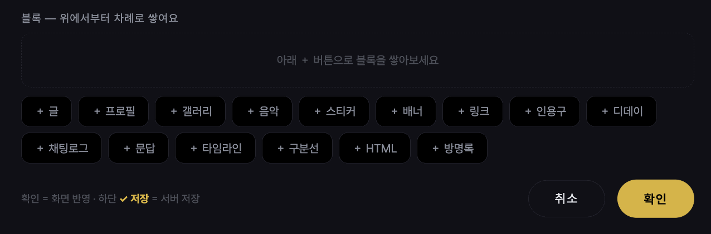
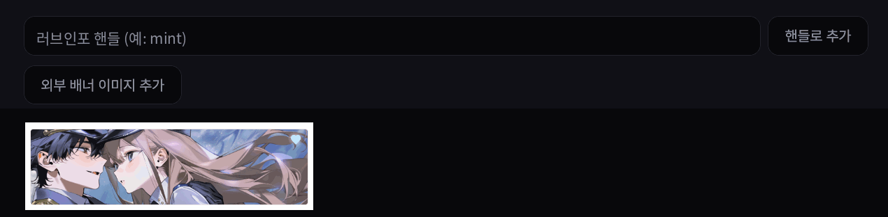

러브인포 · 페이지
블록 15종
보통 페이지에 ＋로 블록을 쌓습니다. 블록마다 「이 블록 디자인」으로 카드 모양을 따로 정할 수 있습니다.
종류
- 글
- 서식·접은 글·
[사진N]삽입. - 프로필
- 사진·항목표.
- 갤러리
- 격자 / 슬라이더. 사진마다 위치·확대 조정.
- 스티커
- 떠다니는 이미지.
- 음악
- mp3 또는 유튜브 링크. 플레이어 모양 3종(디스크·미니 바·이퀄라이저).
- 배너
- 핸들만 넣으면 상대 배너가 걸리고, 맞배너면 ♥. 외부 배너 이미지도 가능. 아래 「배너 교환」 참고.
- 링크
- 목록형·버튼형·미니멀 × 세로/가로 배치. 「＋ 내 페이지」로 홈 안 페이지 이동. 주소는 https:// 없이 적어도 됩니다.
- 인용구 · 디데이
- 디데이는 「당일을 1일로 세기」 옵션(백일 셈법).
- 구분선
- 가는 선·점선·별·물결·글자·빈 여백.
- 채팅로그
- 대사마다 좌/우·이름·프사. 메신저·레트로·대본형 3스타일, 말풍선 색·글꼴, ✨움짤 등장 효과.
- 문답
Q.질문 /A.답. 답을이름: 내용으로 쓰면 페어 인터뷰(여럿이 나란히 대답).- 타임라인
- 날짜·제목·내용 연표. 디자인 3종, 점 모양 커스텀.
- 방명록
- 멤버 서명·비공개 글·주인 답글. 방명록 참고.
- HTML 블록
- 보통 페이지 안에 코드 조각을 끼울 때.

사진 자리img/li-blocks-add.png배너 교환
- 꾸미기에서 내 배너(220×60 권장)를 올리고, 배너 블록에 상대 핸들만 넣으면 서로의 배너가 걸립니다. 서로 걸면 ♥가 자동으로 붙습니다.
- 상대가 주소를 바꿔도 내 배너는 자동으로 새 주소로 갱신됩니다(내 홈에 한 번 들어오면).

사진 자리img/li-banner.png편집 팁
- 블록 편집 맨 위의 「관리용 이름」은 편집 목록에서 구분용 — 방문자에겐 안 보입니다.
- ⧉ 복제로 같은 설정의 블록을 하나 더.
- 카드 색·투명도는 블록 개별 > 페이지 > 프리셋 순으로 적용됩니다.